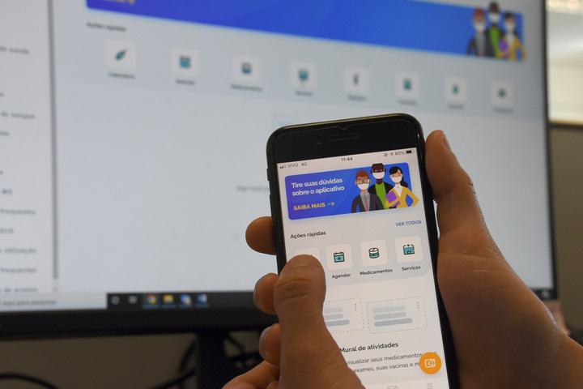
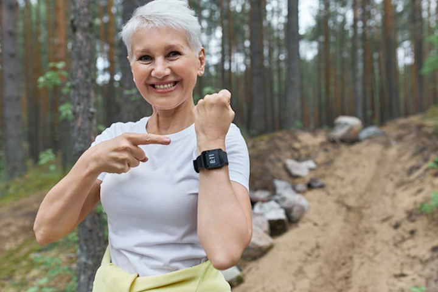

Práticas de telessaúde (uso das telecomunicações e da tecnologia virtual na prestação de assistência fora das instalações tradicionais de saúde, como os chatbots), incluindo a telemedicina (prestação de serviços médicos à distância).
Módulo 4 | Aula 2 As mídias e a tecnologia de informação em saúde
Tópico 1
Saúde Digital (eHealth): as TICs na saúde

As diferentes tecnologias digitais são cada vez mais utilizadas para disseminar informações de saúde. Desde a virada do milênio, surgem novos formatos da saúde digital ou e-Saúde (eHealth), termo que se refere ao uso das Tecnologias da Informação e Comunicação (TICs) no apoio à saúde (EYSENBACH, 2001). Hoje, este campo abrange tecnologias que vão desde a automatização de fluxos e processos até o monitoramento contínuo de funções vitais dos usuários. Veja alguns exemplos de saúde digital:
Em alguns países mais desenvolvidos existem muitas iniciativas de tecnologias em saúde.
Curiosidade...
Em 2022, o governo britânico promete lançar um novo aplicativo gamificado que pretende estimular as pessoas a fazerem mudanças positivas em seu estilo de vida. Em troca da adoção de hábitos saudáveis (como aumentar a contagem de passos ou comer mais frutas e vegetais), os usuários ganham pontos que podem ser trocados por passes em academias de ginástica ou descontos em lojas selecionadas. (NEW, 2021)
Em 2018 o relatório da pesquisa TIC Saúde já apontava que, em um futuro próximo, a inteligência artificial (IA), a Internet of Things (IoT), o metaverso e soluções de Big Data poderiam abrir caminhos para uma assistência à distância digitalizada apta a auxiliar, inclusive, na redução de erros médicos e na rápida resposta do poder público a doenças e epidemias. São promissoras também as perspectivas de uso da janela de inovações tecnológicas em saúde para o trabalho com grupos específicos na APS como, por exemplo, com adolescentes (usuários ativos das ferramentas digitais e um dos alvos das ações do Programa Saúde na Escola), ou com pessoas com mobilidade reduzida.
Mais que um desenvolvimento técnico, a Saúde Digital, em seu sentido ampliado, representa um compromisso com o pensamento global em rede, de forma que as tecnologias digitais sejam utilizadas para melhorar o acesso, a qualidade e a segurança da atenção em saúde em níveis local, regional e mundial.
Recentemente, a OMS organizou e publicou a Estratégia Global em Saúde Digital 2020-2025, documento com diretrizes sobre intervenções para “promover uma vida saudável e o bem-estar para todos, em todos os lugares, em todas as idades”. A nível nacional, a Saúde Digital tornou-se oficialmente uma política pública do SUS em 2017. Atualmente, as diretrizes e a visão estratégica do Ministério da Saúde para o setor estão consolidadas no documento Estratégia de Saúde Digital para o Brasil 2020-2028.
Uma das principais iniciativas para a consolidação dessa estratégia é o programa Conecte SUS, que integra informações de saúde em uma rede de dados disponível ao cidadão e aos profissionais. O aplicativo móvel possibilita, por exemplo, que a pessoa acompanhe sua trajetória e histórico clínico no SUS: vacinas tomadas, atendimentos e exames realizados, internações, medicamentos dispensados etc.
Material complementar
Acesse o material complementar e veja os documentos citados no conteúdo:
Estratégia Global em Saúde Digital 2020-2025:
Estratégia de Saúde Digital para o Brasil 2020-2028:
Relatório da pesquisa TIC Saúde:
Anualmente, a pesquisa TIC Saúde, realizada pelo Comitê Gestor da Internet no Brasil (CGI.br), mapeia o uso das tecnologias de informação e comunicação nos estabelecimentos de saúde brasileiros. Os resultados do último levantamento apontaram que os estabelecimentos de saúde no Brasil estão mais informatizados e conectados, mas a segurança da informação continua sendo um desafio.
E quando o assunto é tecnologia, o evento recente da pandemia de Covid-19, acelerou, no mundo e no Brasil, a transformação digital nos serviços de saúde. Entenda esse cenário pandêmico.
Para refletir...
E é claro, que fica a pergunta: o que vem pela frente? O que podemos esperar agora na promoção da saúde e novas tecnologias, depois do movimento acelerado pela pandemia?
A utilização das TICs na promoção da saúde (digital health promotion) é bastante promissora, observando-se resultados positivos com o uso de ferramentas digitais de abordagem comportamental. A expectativa é que as tecnologias digitais atuem como facilitadoras para o controle da saúde, apoiando e acelerando, cada vez mais, a determinação pessoal para que cada indivíduo cuide da própria saúde (HUMMEL, 2019).

Celulares inteligentes e sensores para telemonitoramento domiciliar têm grande potencial para melhorar a qualidade e a eficiência dos cuidados à saúde, principalmente dos doentes crônicos, que precisam ficar atentos a qualquer alteração da glicemia ou da frequência cardíaca, por exemplo.
Por conta disso, há uma tendência mundial de utilização de aplicativos móveis na saúde (ROCHA et al., 2017), tanto por profissionais quanto por usuários de saúde. O próprio Ministério da Saúde vem lançando vários aplicativos móveis. Esses softwares podem ser utilizados, por exemplo, na realização de triagens, promoção de comportamentos saudáveis, acompanhamento de doenças específicas, compartilhamento de informações clínicas em tempo real ou para a navegação em sistemas de saúde (SANTO et al., 2017), contribuindo para o aumento da LS da população.
No campo do autocuidado em saúde já existem, por exemplo, aplicativos que monitoram e incentivam o consumo de água, que realizam acompanhamento nutricional, que gerenciam o tempo e a qualidade do sono, que organizam a agenda de medicamentos, que registram informações sobre dores de cabeça, que promovem suporte psicológico e que estimulam a prática de meditação e da ioga – apenas para citar algumas das funções possíveis. Um número crescente de estudos vem sugerindo que essas ferramentas digitais podem ser úteis também para melhorar a capacidade de autogestão dos usuários com DCNT (LEVIN-ZAMIR, BERTSCHI, 2019).
Material complementar
Veja uma lista interessante de textos de referência na literatura científica sobre a utilização de TICs na promoção da saúde, divididos de acordo com indicadores relacionados às políticas e cuidados de saúde.
Para se aprofundar no debate em torno das tecnologias aplicadas ao autocuidado assista ao vídeo indicado.
A pandemia de covid-19 contribuiu para acelerar algumas tecnologias em saúde. Alguns cases de sucesso estão reunidos em: